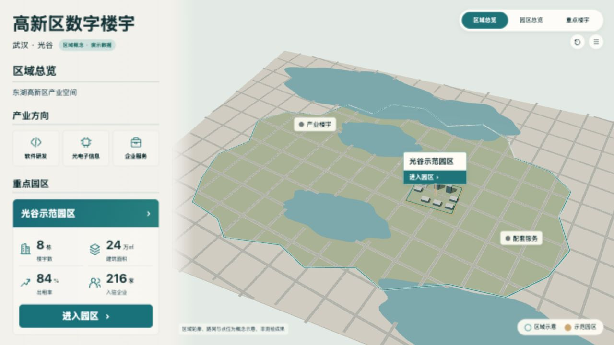

仅校准相机、区域轮廓、园区尺度及UI留白；灰盒不作为定稿。

# 区域简化构图门槛 v3 在详细城市楼群与树木生成前完成实际网页检查。1280×720完整截图见city-gray-v1/v2/v3.jpg，目标1920×1080真实画布投影见city-gray-target-v3.json。v1卡片底部留白仅2.8px；v2地表/水面深度闪烁且区域偏小；源码修复卡片间距、地表高度间隔和相机距离后复验v3。 v3区域边界位于场景X4.66%~90.16%、Y30.40%~86.25%，宽85.50%、高55.85%，完整入镜；园区锚点X59.53%/Y53.49%，3标签均可见。目标1080高的卡片底部留白32.20px。水面已无所见深度闪烁。简化阶段通过，允许按此相机深化；灰盒不代表最终视觉品质或用户审美验收。